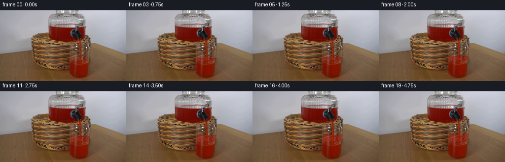
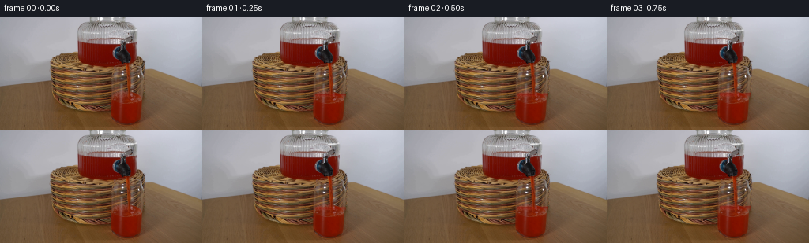

CODING AGENTS AS PIXEL WORLD MODELS
traex/GPT-5.6-Sol · 0064
点击播放 · 原生 RGB 像素
逐轮保存的候选
回放视频、检查图与代码变化。
每份候选均可单独播放。实际图片检查记录在下方工具轨迹中。
候选 01播放与检查图
点击播放 · 原生 RGB 像素


展开代码变化
--- 上一保存版本
+++ 本次保存版本
@@ -0,0 +1,144 @@
+from pathlib import Path
+import numpy as np
+from PIL import Image
+import cv2
+import artifact_io
+
+# Analytic continuation of the photographed setup. The camera and every solid
+# object remain locked; only the transparent stream, meniscus, and accumulating
+# liquid are composited over the source photograph.
+ROOT = Path(__file__).resolve().parent
+SOURCE = np.asarray(Image.open(ROOT / "first_frame.png").convert("RGB"), dtype=np.uint8)
+H, W = SOURCE.shape[:2]
+Y, X = np.mgrid[0:H, 0:W].astype(np.float32)
+
+
+def over(frame, rgb, alpha):
+ """Alpha composite an RGB field/colour, preserving uint8 output."""
+ a = np.clip(alpha, 0.0, 1.0)[..., None]
+ if np.ndim(rgb) == 1:
+ rgb = np.broadcast_to(np.asarray(rgb, np.float32), frame.shape)
+ return np.clip(frame.astype(np.float32) * (1.0-a) + np.asarray(rgb, np.float32) * a,
+ 0, 255).astype(np.uint8)
+
+
+def smoothstep(a, b, q):
+ z = np.clip((q-a)/(b-a), 0.0, 1.0)
+ return z*z*(3.0-2.0*z)
+
+
+def glass_sides(y):
+ """Inside walls of the photographed tumbler (walls taper near its foot)."""
+ taper = np.clip((y - 125.0) / 15.0, 0.0, 1.0)
+ left = 141.6 + 14.2*taper
+ right = 182.0 - 11.4*taper
+ return left, right
+
+
+def make_frame(index):
+ if index == 0:
+ return SOURCE.copy()
+
+ f = SOURCE.copy()
+ # The existing liquid surface is near row 99. A steady 5-pixel stream adds
+ # about 0.7 image pixels of depth per video frame.
+ level = 99.0 - 0.70*index
+ phase = index * 1.73
+ impact_x = 162.1 + 0.32*np.sin(phase*0.73)
+
+ left, right = glass_sides(Y)
+ interior = smoothstep(left, left+1.1, X) * (1.0-smoothstep(right-1.1, right, X))
+ interior *= (Y < 139.5).astype(np.float32)
+
+ # A very small impact depression and two low ripples at the point where the
+ # stream meets the drink. Their amplitude damps toward the glass walls.
+ dx = X-impact_x
+ wave = (0.82*np.exp(-(dx/3.0)**2)
+ - 0.28*np.exp(-((dx-8.0)/5.0)**2)*np.sin(phase)
+ - 0.24*np.exp(-((dx+9.0)/5.8)**2)*np.cos(phase*0.91))
+ surface_y = level + wave
+ surface_coverage = smoothstep(surface_y-0.55, surface_y+0.55, Y)
+
+ # Only synthesize the newly accumulated band above the original level. The
+ # already-present red drink below row 99 comes directly from the photograph.
+ lower_join = 1.0 - smoothstep(98.6, 103.0, Y)
+ fluid_mask = interior * surface_coverage * lower_join
+
+ # Weak horizontal refraction keeps the woven basket visible through the red
+ # transparent liquid rather than replacing it with a flat painted patch.
+ map_x = X + 0.72*np.sin(Y*0.51 + phase*0.34) + 0.22*np.sin(X*0.36-phase)
+ refracted = cv2.remap(SOURCE, map_x.astype(np.float32), Y,
+ interpolation=cv2.INTER_LINEAR,
+ borderMode=cv2.BORDER_REPLICATE)
+ refr_alpha = fluid_mask * 0.24
+ f = over(f, refracted, refr_alpha)
+
+ lum = (0.299*SOURCE[...,0] + 0.587*SOURCE[...,1] + 0.114*SOURCE[...,2])
+ # Bright ruby-red but still optically transparent; luminance variation from
+ # the source supplies realistic basket texture and glass shading.
+ liquid_rgb = np.empty_like(SOURCE, dtype=np.float32)
+ liquid_rgb[...,0] = np.clip(176.0 + 0.20*(lum-75.0), 150, 210)
+ liquid_rgb[...,1] = np.clip(18.0 + 0.055*(lum-70.0), 10, 30)
+ liquid_rgb[...,2] = np.clip(5.0 + 0.025*(lum-70.0), 2, 13)
+ depth = np.clip((Y-surface_y)/8.0, 0.0, 1.0)
+ liquid_alpha = fluid_mask*(0.35 + 0.09*depth)
+ f = over(f, liquid_rgb, liquid_alpha)
+
+ # Meniscus: a dark lower edge plus a broken reflected red highlight. Masks
+ # are sub-pixel soft to avoid aliased animation at 256x144.
+ width_gate = interior * (Y < 126)
+ d = Y-surface_y
+ dark_line = np.exp(-0.5*((d-0.45)/0.58)**2) * width_gate
+ dark_line *= (0.77 + 0.23*np.cos((X-impact_x)*0.23 + phase*0.31))
+ f = over(f, np.array([105, 7, 2], np.float32), dark_line*0.39)
+ shine = np.exp(-0.5*((d+0.48)/0.44)**2) * width_gate
+ shine *= np.clip(0.35 + 0.65*np.sin(X*0.43 + phase*0.40)**2, 0, 1)
+ f = over(f, np.array([222, 47, 20], np.float32), shine*0.24)
+
+ # Continuous falling stream from the dispenser's spout. It is narrow,
+ # slightly irregular, and has travelling specular glints. The source image
+ # already contains the stream in frame 0, so these are restrained optical
+ # changes rather than an abrupt newly drawn object.
+ center = (162.0 + 0.30*np.sin((Y-59.0)*0.23 + phase)
+ +0.14*np.sin((Y-59.0)*0.57-phase*0.63))
+ radius = 2.32 + 0.17*np.sin(Y*0.41 + phase*0.84)
+ sd = np.abs(X-center)-radius
+ stream = (1.0-smoothstep(-0.20, 0.75, sd))
+ stream *= smoothstep(58.0, 60.8, Y) * (1.0-smoothstep(surface_y-1.9, surface_y+0.1, Y))
+ # Tint, preserving the original dark ruby appearance.
+ f = over(f, np.array([157, 11, 2], np.float32), stream*0.115)
+ core = np.exp(-0.5*((X-(center-0.48))/0.48)**2) * stream
+ travelling = 0.40 + 0.60*smoothstep(0.15, 0.80,
+ np.sin((Y-58.0)*0.55-phase*1.52)*0.5+0.5)
+ f = over(f, np.array([225, 53, 19], np.float32), core*travelling*0.20)
+ edge = np.exp(-0.5*((np.abs(X-center)-radius+0.18)/0.35)**2)*stream
+ f = over(f, np.array([83, 4, 1], np.float32), edge*0.13)
+
+ # Tiny transient splash beads immediately around impact, never leaving the
+ # confines of the glass. Their positions follow deterministic flow phases.
+ splash = np.zeros((H, W), np.float32)
+ for k, (ox, oy, rr) in enumerate(((-3.2,-1.8,.55),(3.5,-1.1,.48),(1.8,-2.7,.40))):
+ pulse = max(0.0, np.sin(phase*1.15 + k*2.1))
+ cx = impact_x + ox + 0.35*np.sin(phase+k)
+ cy = level + oy - 0.55*pulse
+ splash = np.maximum(splash, np.exp(-((X-cx)**2+(Y-cy)**2)/(2*rr*rr))*pulse)
+ splash *= interior
+ f = over(f, np.array([215, 39, 13], np.float32), splash*0.24)
+
+ # Reassert faint clear glass edge highlights over the newly filled band.
+ edge_left = np.exp(-0.5*((X-(left+0.35))/0.55)**2)
+ edge_right = np.exp(-0.5*((X-(right-0.35))/0.55)**2)
+ glass_edge = (edge_left+edge_right) * smoothstep(level+1, level+4, Y) * (Y<137)
+ f = over(f, np.array([190, 176, 164], np.float32), glass_edge*0.055)
+ return f
+
+
+def main():
+ frames = np.stack([make_frame(i) for i in range(20)]).astype(np.uint8)
+ # Contract-critical exact first frame.
+ frames[0] = SOURCE
+ artifact_io.save(frames, ROOT)
+
+
+if __name__ == "__main__":
+ main()
可观测工具轨迹
实际执行的命令与返回图片。
命令 1exit 0
/bin/bash -lc "cat GENERATION_RULES.md && printf '\\n---PROMPT---\\n' && cat prompt.txt"
命令 2exit 0
/bin/bash -lc "find . -maxdepth 2 -type f -printf '%p %s bytes\\n' | sort"
命令 3exit 0
/bin/bash -lc "python3 - <<'PY'
from PIL import Image
im=Image.open('first_frame.png')
print(im.mode, im.size)
import numpy as np
x=np.array(im)
print(x.min(),x.max(),x.mean(axis=(0,1)), x.std(axis=(0,1)))
PY"命令 4exit 0
/bin/bash -lc "python3 - <<'PY'
from PIL import Image
import numpy as np
from collections import Counter
im=np.array(Image.open('first_frame.png'))
h,w,_=im.shape
# Quantized dominant color bins
q=(im//16)*16+8
c=Counter(map(tuple,q.reshape(-1,3)))
for rgb,n in c.most_common(25):
y,x=np.where(np.all(q==rgb,axis=2)); print(rgb,n,'x',int(x.min()),int(x.max()),'y',int(y.min()),int(y.max()),'cent',round(x.mean(),1),round(y.mean(),1))
# grid averages 16x12
print('\\nGRID avg RGB, each cell 16x12')
for gy in range(12):
row=[]
for gx in range(16):
a=im[gy*12:(gy+1)*12,gx*16:(gx+1)*16].mean((0,1)).astype(int)
row.append('%02x%02x%02x'%tuple(a))
print(' '.join(row))
# Strong saturated red masks
for desc,m in [
('red', (im[:,:,0]>130)&(im[:,:,0]>im[:,:,1]*1.4)&(im[:,:,0]>im[:,:,2]*1.3)),
('brightred',(im[:,:,0]>170)&(im[:,:,1]<100)&(im[:,:,2]<100)),
('dark',(im.mean(2)<55)),('white',(im.mean(2)>215)),
('basket',(im[:,:,0]>100)&(im[:,:,0]<200)&(im[:,:,1]>55)&(im[:,:,1]<150)&(im[:,:,2]<90))]:
ys,xs=np.where(m); print(desc,m.sum(), ('bounds',xs.min(),xs.max(),ys.min(),ys.max(),'cent',xs.mean(),ys.mean()) if len(xs) else '')
# counts row / cols peaks
print(' rows',sorted(enumerate(np.bincount(ys,minlength=h)),key=lambda z:-z[1])[:8])
print(' cols',sorted(enumerate(np.bincount(xs,minlength=w)),key=lambda z:-z[1])[:8])
PY"命令 5exit 0
/bin/bash -lc "cat > .tmp/analyze.py <<'PY'
from PIL import Image
import numpy as np, cv2
im=np.array(Image.open('first_frame.png'))
# nearest resize 64x36, average color then categories
small=cv2.resize(im,(128,72),interpolation=cv2.INTER_AREA)
def cat(v):
r,g,b=map(int,v); mx=max(r,g,b); mn=min(r,g,b)
# categories
if (r+g+b)/3 < 45: return '#'
if r>g*1.7 and r>b*1.5 and r>70: return 'R' if r>130 else 'r'
if r>g*1.35 and r>b*1.2 and r>75: return 'o'
if r-g>20 and g-b>8 and r<170: return 'w' # warm wood
if max(v)-min(v)<15:
return '.' if np.mean(v)>160 else ':' if np.mean(v)>100 else ','
if b>r+12: return 'B'
if np.mean(v)>190:return '+'
if np.mean(v)>140:return '-'
if np.mean(v)>90:return '='
return 'x'
for y in range(0,72,2):
print(f'{y*2:03}', ''.join(cat(v) for v in small[y]))
print('\\nRed runs per row mask R>1.35G, R>1.2B')
r,g,b=im.transpose(2,0,1); mask=(r.astype(int)>1.35*g)&(r.astype(int)>1.2*b)&(r>70)
for y in range(144):
xs=np.where(mask[y])[0]
if len(xs):
# runs
spl=np.split(xs,np.where(np.diff(xs)>1)[0]+1)
rr=[(a[0],a[-1]) for a in spl if len(a)>=1]
print(y,rr)
# canny components-ish edge count runs
print('\\nPixels sample strategic')
for y in range(0,144,8):
vals=[]
for x in range(56,200,8): vals.append('%02x%02x%02x'%tuple(im[y,x]))
print(y,' '.join(vals))
PY
python3 .tmp/analyze.py"命令 6exit 0
/bin/bash -lc "python3 - <<'PY'
import cv2,numpy as np
im=cv2.imread('first_frame.png'); gray=cv2.cvtColor(im,cv2.COLOR_BGR2GRAY)
ed=cv2.Canny(gray,35,90)
lines=cv2.HoughLinesP(ed,1,np.pi/180,threshold=12,minLineLength=8,maxLineGap=3)
ls=[]
for l in lines[:,0]:
x1,y1,x2,y2=map(int,l); L=((x2-x1)**2+(y2-y1)**2)**.5; a=np.degrees(np.arctan2(y2-y1,x2-x1)); ls.append((L,a,(x1,y1,x2,y2)))
for L,a,l in sorted(ls,reverse=True)[:150]: print(f'{L:5.1f} {a:6.1f} {l}')
PY"命令 7exit 0
/bin/bash -lc "python3 - <<'PY'
from PIL import Image
import numpy as np,cv2
im=np.array(Image.open('first_frame.png')); hsv=cv2.cvtColor(im,cv2.COLOR_RGB2HSV)
# y25-140 x90-190 at 2 pixel averaged but category choose center
for y in range(24,142,2):
s=''
for x in range(88,192,2):
a=im[y:y+2,x:x+2].mean((0,1)); h=hsv[y:y+2,x:x+2].mean((0,1))
r,g,b=a
if a.mean()<28: c='K'
elif r>g*2.2 and r>b*1.7: c='R'
elif r>g*1.6 and r>b*1.4: c='r'
elif r>g*1.3 and r>b*1.2: c='o'
elif max(a)-min(a)<17: c='.' if a.mean()>145 else ':' if a.mean()>90 else 'k'
elif b>r+10:c='B'
elif r>g+22 and g>b+6:c='w'
elif a.mean()>150:c='-'
elif a.mean()>95:c='='
else:c='x'
s+=c
print(f'{y:03} {s}')
PY"命令 8exit 0
/bin/bash -lc "python3 - <<'PY'
import cv2,numpy as np
im=cv2.imread('first_frame.png'); g=cv2.cvtColor(im,cv2.COLOR_BGR2GRAY); ed=cv2.Canny(g,40,100)
# crop x125..195 y45..143, 2x2 any edge
for y in range(44,144,2):
s=''
for x in range(124,196,2):
n=ed[y:y+2,x:x+2].sum()//255
s+=' ' if n==0 else '.' if n==1 else '+' if n==2 else '#'
print(f'{y:03} {s}')
# exact rgb key lines x135-190 every5 for y
im=im[:,:,::-1]
print('RGB rows')
for y in range(56,141,4):
print(y,' '.join('%02x%02x%02x'%tuple(im[y,x]) for x in range(130,191,5)))
PY"命令 9exit 0
/bin/bash -lc "python3 - <<'PY'
from PIL import Image
import numpy as np
im=np.array(Image.open('first_frame.png')).astype(float)
r,g,b=im.transpose(2,0,1); z=(r-(g+b)/2) # redness
# print redness chars x125..195
chars=' .:-=+*#%@'
for y in range(58,142,2):
s=''
for x in range(125,196,2):
v=z[y:y+2,x:x+2].mean()
idx=int(np.clip((v+5)/12,0,9));s+=chars[idx]
print(f'{y:03} {s}')
# avg per rectangle rows
print('row red means x 140-182')
for y in range(55,141):
print(y,round(z[y,140:183].mean(),1),round(z[y,140:183].std(),1),round(r[y,140:183].mean(),1),round(g[y,140:183].mean(),1),round(b[y,140:183].mean(),1))
PY"命令 10exit 0
/bin/bash -lc 'cat artifact_io.py'
命令 11exit 0
/bin/bash -lc "cat > generate.py <<'PY'
from pathlib import Path
import numpy as np
from PIL import Image
import cv2
import artifact_io
# Analytic continuation of the photographed setup. The camera and every solid
# object remain locked; only the transparent stream, meniscus, and accumulating
# liquid are composited over the source photograph.
ROOT = Path(__file__).resolve().parent
SOURCE = np.asarray(Image.open(ROOT / \"first_frame.png\").convert(\"RGB\"), dtype=np.uint8)
H, W = SOURCE.shape[:2]
Y, X = np.mgrid[0:H, 0:W].astype(np.float32)
def over(frame, rgb, alpha):
\"\"\"Alpha composite an RGB field/colour, preserving uint8 output.\"\"\"
a = np.clip(alpha, 0.0, 1.0)[..., None]
if np.ndim(rgb) == 1:
rgb = np.broadcast_to(np.asarray(rgb, np.float32), frame.shape)
return np.clip(frame.astype(np.float32) * (1.0-a) + np.asarray(rgb, np.float32) * a,
0, 255).astype(np.uint8)
def smoothstep(a, b, q):
z = np.clip((q-a)/(b-a), 0.0, 1.0)
return z*z*(3.0-2.0*z)
def glass_sides(y):
\"\"\"Inside walls of the photographed tumbler (walls taper near its foot).\"\"\"
taper = np.clip((y - 125.0) / 15.0, 0.0, 1.0)
left = 141.6 + 14.2*taper
right = 182.0 - 11.4*taper
return left, right
def make_frame(index):
if index == 0:
return SOURCE.copy()
f = SOURCE.copy()
# The existing liquid surface is near row 99. A steady 5-pixel stream adds
# about 0.7 image pixels of depth per video frame.
level = 99.0 - 0.70*index
phase = index * 1.73
impact_x = 162.1 + 0.32*np.sin(phase*0.73)
left, right = glass_sides(Y)
interior = smoothstep(left, left+1.1, X) * (1.0-smoothstep(right-1.1, right, X))
interior *= (Y < 139.5).astype(np.float32)
# A very small impact depression and two low ripples at the point where the
# stream meets the drink. Their amplitude damps toward the glass walls.
dx = X-impact_x
wave = (0.82*np.exp(-(dx/3.0)**2)
- 0.28*np.exp(-((dx-8.0)/5.0)**2)*np.sin(phase)
- 0.24*np.exp(-((dx+9.0)/5.8)**2)*np.cos(phase*0.91))
surface_y = level + wave
surface_coverage = smoothstep(surface_y-0.55, surface_y+0.55, Y)
# Only synthesize the newly accumulated band above the original level. The
# already-present red drink below row 99 comes directly from the photograph.
lower_join = 1.0 - smoothstep(98.6, 103.0, Y)
fluid_mask = interior * surface_coverage * lower_join
# Weak horizontal refraction keeps the woven basket visible through the red
# transparent liquid rather than replacing it with a flat painted patch.
map_x = X + 0.72*np.sin(Y*0.51 + phase*0.34) + 0.22*np.sin(X*0.36-phase)
refracted = cv2.remap(SOURCE, map_x.astype(np.float32), Y,
interpolation=cv2.INTER_LINEAR,
borderMode=cv2.BORDER_REPLICATE)
refr_alpha = fluid_mask * 0.24
f = over(f, refracted, refr_alpha)
lum = (0.299*SOURCE[...,0] + 0.587*SOURCE[...,1] + 0.114*SOURCE[...,2])
# Bright ruby-red but still optically transparent; luminance variation from
# the source supplies realistic basket texture and glass shading.
liquid_rgb = np.empty_like(SOURCE, dtype=np.float32)
liquid_rgb[...,0] = np.clip(176.0 + 0.20*(lum-75.0), 150, 210)
liquid_rgb[...,1] = np.clip(18.0 + 0.055*(lum-70.0), 10, 30)
liquid_rgb[...,2] = np.clip(5.0 + 0.025*(lum-70.0), 2, 13)
depth = np.clip((Y-surface_y)/8.0, 0.0, 1.0)
liquid_alpha = fluid_mask*(0.35 + 0.09*depth)
f = over(f, liquid_rgb, liquid_alpha)
# Meniscus: a dark lower edge plus a broken reflected red highlight. Masks
# are sub-pixel soft to avoid aliased animation at 256x144.
width_gate = interior * (Y < 126)
d = Y-surface_y
dark_line = np.exp(-0.5*((d-0.45)/0.58)**2) * width_gate
dark_line *= (0.77 + 0.23*np.cos((X-impact_x)*0.23 + phase*0.31))
f = over(f, np.array([105, 7, 2], np.float32), dark_line*0.39)
shine = np.exp(-0.5*((d+0.48)/0.44)**2) * width_gate
shine *= np.clip(0.35 + 0.65*np.sin(X*0.43 + phase*0.40)**2, 0, 1)
f = over(f, np.array([222, 47, 20], np.float32), shine*0.24)
# Continuous falling stream from the dispenser's spout. It is narrow,
# slightly irregular, and has travelling specular glints. The source image
# already contains the stream in frame 0, so these are restrained optical
# changes rather than an abrupt newly drawn object.
center = (162.0 + 0.30*np.sin((Y-59.0)*0.23 + phase)
+0.14*np.sin((Y-59.0)*0.57-phase*0.63))
radius = 2.32 + 0.17*np.sin(Y*0.41 + phase*0.84)
sd = np.abs(X-center)-radius
stream = (1.0-smoothstep(-0.20, 0.75, sd))
stream *= smoothstep(58.0, 60.8, Y) * (1.0-smoothstep(surface_y-1.9, surface_y+0.1, Y))
# Tint, preserving the original dark ruby appearance.
f = over(f, np.array([157, 11, 2], np.float32), stream*0.115)
core = np.exp(-0.5*((X-(center-0.48))/0.48)**2) * stream
travelling = 0.40 + 0.60*smoothstep(0.15, 0.80,
np.sin((Y-58.0)*0.55-phase*1.52)*0.5+0.5)
f = over(f, np.array([225, 53, 19], np.float32), core*travelling*0.20)
edge = np.exp(-0.5*((np.abs(X-center)-radius+0.18)/0.35)**2)*stream
f = over(f, np.array([83, 4, 1], np.float32), edge*0.13)
# Tiny transient splash beads immediately around impact, never leaving the
# confines of the glass. Their positions follow deterministic flow phases.
splash = np.zeros((H, W), np.float32)
for k, (ox, oy, rr) in enumerate(((-3.2,-1.8,.55),(3.5,-1.1,.48),(1.8,-2.7,.40))):
pulse = max(0.0, np.sin(phase*1.15 + k*2.1))
cx = impact_x + ox + 0.35*np.sin(phase+k)
cy = level + oy - 0.55*pulse
splash = np.maximum(splash, np.exp(-((X-cx)**2+(Y-cy)**2)/(2*rr*rr))*pulse)
splash *= interior
f = over(f, np.array([215, 39, 13], np.float32), splash*0.24)
# Reassert faint clear glass edge highlights over the newly filled band.
edge_left = np.exp(-0.5*((X-(left+0.35))/0.55)**2)
edge_right = np.exp(-0.5*((X-(right-0.35))/0.55)**2)
glass_edge = (edge_left+edge_right) * smoothstep(level+1, level+4, Y) * (Y<137)
f = over(f, np.array([190, 176, 164], np.float32), glass_edge*0.055)
return f
def main():
frames = np.stack([make_frame(i) for i in range(20)]).astype(np.uint8)
# Contract-critical exact first frame.
frames[0] = SOURCE
artifact_io.save(frames, ROOT)
if __name__ == \"__main__\":
main()
PY
python3 generate.py
python3 - <<'PY'
from PIL import Image
import numpy as np
z=np.load('pixels.npz')['pixels']; src=np.array(Image.open('first_frame.png'))
print('pixels',z.shape,z.dtype)
fr=np.stack([np.array(Image.open(f'frames/{i:02d}.png')) for i in range(20)])
print('frames',fr.shape,fr.dtype,'frame0 exact',np.array_equal(fr[0],src))
for i in [0,1,2,5,10,15,19]:
d=np.abs(fr[i].astype(int)-src.astype(int)); ch=(d.max(2)>0)
print(i,'changed',ch.sum(),'bounds', (np.where(ch)[1].min(),np.where(ch)[1].max(),np.where(ch)[0].min(),np.where(ch)[0].max()) if ch.any() else None,'mae',d.mean(), 'max',d.max())
PY"命令 12exit 0
/bin/bash -lc "python3 - <<'PY'
from PIL import Image
import numpy as np
fr=np.stack([np.array(Image.open(f'frames/{i:02d}.png')) for i in range(20)])
# temporal stats and central liquid rows (mean RGB inside cup)
for i in range(20):
td=np.abs(fr[i].astype(int)-fr[i-1].astype(int)).mean() if i else 0
print(f'{i:02d} temporalMAE {td:.4f} cup85-98 {fr[i,85:99,145:179].mean((0,1)).round(1)} stream {fr[i,62:95,160:165].mean((0,1)).round(1)}')
PY
ls -lh pixels.npz inspection.png index.html frames/00.png frames/19.png generate.py"保存候选 1 份；完成命令 12 次；可验证图片返回 0 张。原始 API 响应与完整日志保留在本地。